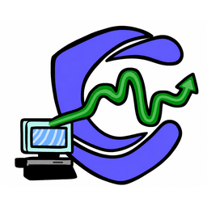

Custod Desk deviceDesk sensor
Not connected.
Plug the Custod sensor into a USB port, click Connect device, and pick the Arduino (often "USB Serial" / "CH340" / "Arduino Uno").
Status mirrored to the device
—
Waiting for a check…
The desk light follows your live Custod status: green when stable, amber when strained, red when at risk. Updates automatically.
Live readings
—
Desk temp (°C)
—
Posture score
—
Distance (cm)
—
Light level
The desk sensor reads only ambient signals — temperature, distance (posture), and light. No microphone, no camera, no page or app data. It connects only over USB through this extension; the macOS and iOS apps never access it. Privacy & safety: Custod shows digital-strain patterns and reset suggestions — it is not a diagnosis or therapy tool.